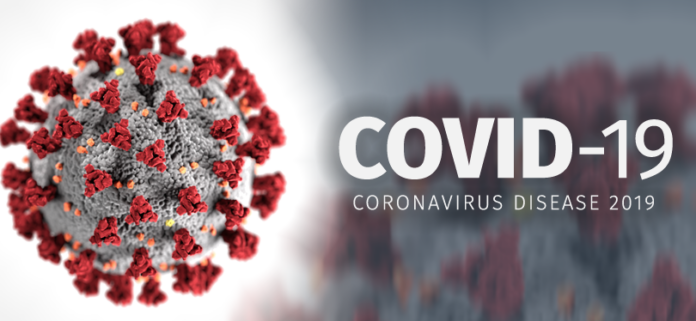

BLOG PAGE
BREAKTHROUGH OF COVID-19 WAVE IN NEPAL
Covid-19 wave, April-19 ,2023
For the first time in recent months, there has been a steady increase in the number of breakthrough Covid-19 cases throughout Nepal. A vaccine breakthrough infection or case is defined by the Centers for Disease Control and Prevention (CDC) as the discovery of SARS-CoV-2 RNA or antigen in a respiratory specimen taken from a person more than 14 days after receiving all advised doses of an FDA-approved Covid-19 vaccine.
CURRENT STATUS
Current status, April-18 ,2023

Currently, SARS-CoV-2 (also known as "twindemic") and influenza are both co-circulating in Nepal. People who have a fever, cough, runny nose, and bodyache don't test positive for the SARS-CoV-2 virus because they think they have the flu. It implies that the number of Covid-19 infections in the population may be significantly larger than the reported numbers, necessitating cautious surveillance by the relevant agency.
A POSSIBLE OUTCOME OF THE CURRENT BREAKTHROUGH COVID-19
It might be difficult to forecast what the present breakthrough Covid-19 wave will do. But because it has been more than six months since the primary series, including booster doses, was finished, the world, especially the scientific community, is eager to know and understand the impact of Covid-19 disease, particularly the duration of vaccine effectiveness and the impact of the vaccines against ongoing new mutated/hybrid SARS-CoV-2 virus.